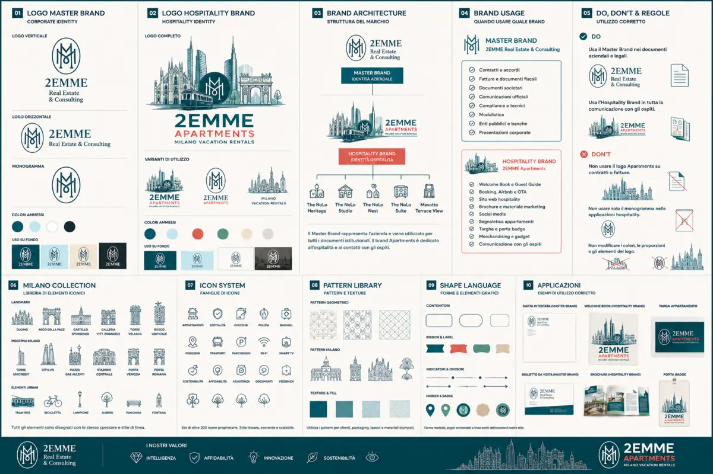
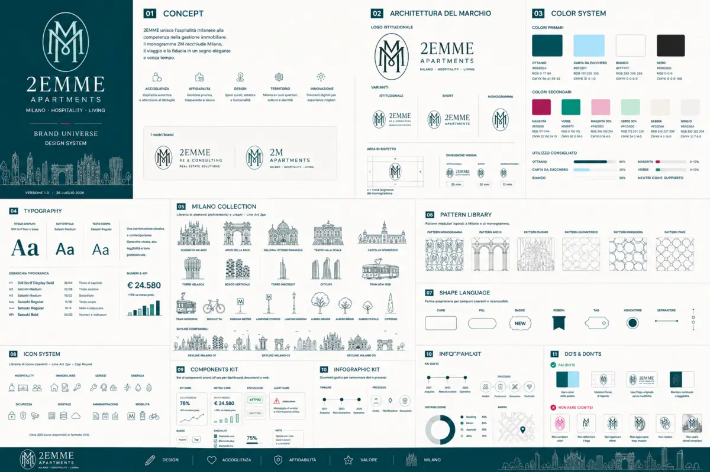
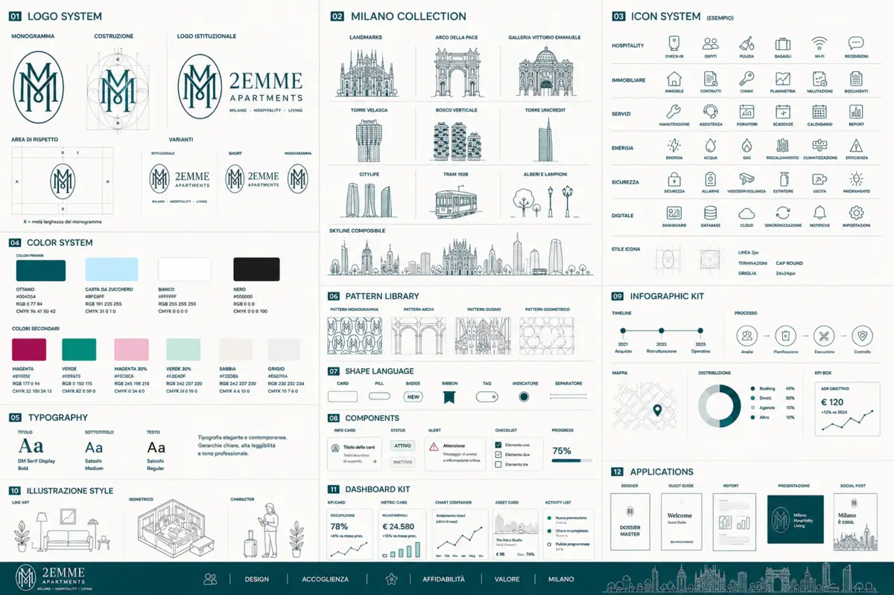

Start
Scegli cosa vuoi fare
Bottoni grandi, chiari e pensati per essere usati da telefono mentre si è in giro per Milano.
Settembre 2026: highlights
Macro Area
Food & Drink
Ristoranti milanesi, cucine internazionali, pizza contemporanea, cocktail bar e aperitivo.

Settembre: ristoranti & rooftop
Tradizione Milanese
Etnico & NoLo
Pizza
Cocktail Bar
Macro Area
Cultura
Musei, architettura, FAI, case museo e luoghi simbolici della città.

Prime domeniche gratis
Domenica 6 settembre molti musei statali sono gratuiti. Verificare in anticipo modalità di accesso, prenotazioni e disponibilità del singolo museo.
Settembre 2026: mostre & performance
Sempre gratis
FAI & Case Museo
Macro Area
Itinerari
Percorsi narrativi e luoghi che raccontano Milano attraverso storia, arte, memoria e spiritualità.
Cimitero Monumentale
Un museo a cielo aperto: a settembre sono ideali il mattino o il tardo pomeriggio; portare comunque acqua nelle giornate più calde.
Walking Tour
Le 20 grandi voci +
Extra: Abbazia di Chiaravalle
Dopo il Monumentale, per capire la doppia anima di Milano: dal marmo della memoria al silenzio rurale cistercense. A settembre è una pausa verde e lenta rispetto al centro, piacevole nelle giornate miti.
Macro Area
Chiese
Le grandi chiese di Milano: itinerario spirituale e artistico nel cuore della città ambrosiana.
Macro Area
Skyline & Views
Terrazze, belvedere e punti panoramici per leggere Milano dall'alto.

Settembre: terrazze, piscine & roof bar
Macro Area
Gite Fuori Porta
Laghi, abbazie, città d'arte e destinazioni raggiungibili facilmente da Milano.
Settembre: gite & festival
Macro Area
Nightlife
Porta Venezia, NoLo, club glamour, serate queer, listening bar e nightlife contemporanea.

Concerti Settembre 2026
Macro Area
Safety & Emergency
Numeri utili, consolati, gestione emergenze, furti e consigli pratici per muoversi in sicurezza.